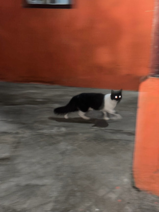

|
5
10
15
20
25
30
35
40
45
50
55
60
65
70
75
80
85
90
95
100
105
110
115
120
125
130
135
140
145
150
155
|
Heinrich Heine/
Deutschland.
Ein Wintermärchen./
Kaput XII/
Im nächtlichen Walde humpelt dahin
Die Chaise. Da kracht es plötzlich –
Ein Rad ging los. Wir halten still.
Das ist nicht sehr ergötzlich.
Der Postillion steigt ab und eilt
Ins Dorf, und ich verweile
Um Mitternacht allein im Wald.
Ringsum ertönt ein Geheule.
Das sind die Wölfe, die heulen so wild,
Mit ausgehungerten Stimmen.
Wie Lichter in der Dunkelheit
Die feurigen Augen glimmen.
Sie hörten von meiner Ankunft gewiß,
Die Bestien, und mir zur Ehre
Illuminierten sie den Wald
Und singen sie ihre Chöre.
Das ist ein Ständchen, ich merke es jetzt,
Ich soll gefeiert werden!
Ich warf mich gleich in Positur
Und sprach mit gerührten Gebärden:
»Mitwölfe! Ich bin glücklich, heut
In eurer Mitte zu weilen,
Wo soviel edle Gemüter mir
Mit Liebe entgegenheulen.
Was ich in diesem Augenblick
Empfinde, ist unermeßlich;
Ach, diese schöne Stunde bleibt
Mir ewig unvergeßlich.
Ich danke euch für das Vertraun,
Womit ihr mich beehret
Und das ihr in jeder Prüfungszeit
Durch treue Beweise bewähret.
Mitwölfe! Ihr zweifeltet nie an mir,
Ihr ließet euch nicht fangen
Von Schelmen, die euch gesagt, ich sei
Zu den Hunden übergegangen,
Ich sei abtrünnig und werde bald
Hofrat in der Lämmerhürde –
Dergleichen zu widersprechen war
Ganz unter meiner Würde.
Der Schafpelz, den ich umgehängt
Zuweilen, um mich zu wärmen,
Glaubt mir's, er brachte mich nie dahin,
Für das Glück der Schafe zu schwärmen.
Ich bin kein Schaf, ich bin kein Hund,
Kein Hofrat und kein Schellfisch –
Ich bin ein Wolf geblieben, mein Herz
Und meine Zähne sind wölfisch.
Ich bin ein Wolf und werde stets
Auch heulen mit den Wölfen –
Ja, zählt auf mich und helft euch selbst,
Dann wird auch Gott euch helfen!«
Das war die Rede, die ich hielt,
Ganz ohne Vorbereitung;
Verstümmelt hat Kolb sie abgedruckt
In der »Allgemeinen Zeitung«.
Nina Kunz/
Ich denk, ich denk zu viel/
Workism.
Manchmal lerne ich ein neues Wort und denke: Wie habe ich je ohne dieses Wort leben können? Gerade ist das »Workism«. Workism beschreibt nämlich etwas, das mir schon länger Sorgen macht: Es ist der Glaube, dass Arbeit nicht mehr eine Notwendigkeit darstellt, sondern den Kern der eigenen Identität. Geprägt wurde der Begriff vom Journalisten Derek Thompson, der letztes Jahr in der Zeitschrift The Atlantic darüber schrieb, dass immer mehr Leute ihre Erfüllung in der Arbeit suchen. Als ich den Text las, dachte ich nach jedem Satz: Oh, das mache ich auch. Denn genau wie Thompson es beschreibt, bin ich mit dem Ideal aufgewachsen, dass es ein zentrales Ziel im Leben sein soll, einen Job zu finden, der weniger Lohnarbeit ist als vielmehr Selbstverwirklichung. Darum wollte ich Journalistin werden, und darum habe ich heute keine Schreib-, sondern Lebenskrisen, wenn ich im Job versage. Besonders faszinierend an diesem Artikel fand ich, dass die bedeutendsten Ökonomen des 20. Jahrhunderts, wie etwa John Maynard Keynes, schon vor achtzig Jahren prophezeiten, dass das Zeitalter der Selbstverwirklichung kommen werde - nur eben ganz anders. Sie glaubten, dass die Automatisierung der Arbeit so viel Freizeit schaffen werde, dass die Menschen ihren Fokus auf Hobbys und Freund*innen verlegen könnten. Aber stattdessen ist bedeutsame Arbeit zum Fetisch geworden, weil einige Workaholics (vor allem im Silicon Valley) ihren Job zu einer »Berufung« hochstilisiert haben. Laut Thompson wurde so ein Ideal geschaffen, das nun auf allen Ebenen der Gesellschaft zu Burn-outs und Ängsten führt. Denn: Die Gewinner des Systems (Architekt*innen, Startup-Gründer*innen ...) arbeiten bis zum Umfallen, während alle anderen als »Verlierer*innen« dastehen, weil sie keinen dieser raren Selbstverwirklichungsjobs ergattern. Aber es gibt auch Gutes am Konzept von Workism. Oder zumindest war ich froh, endlich einen Begriff zu haben, der mir zeigt, bei was für einem Wahnsinn ich da eigentlich mitmache. Das Wort funktioniert wie ein Spiegel für das eigene Tun. Ich fühlte mich bei der Lektüre des Textes ja nur so ertappt, weil ich verstand, was hinter meinem Selbstverwirklichungsdrang steckt. Also habe ich mir für dieses Jahr etwas vorgenommen. Ich möchte dem Modell von Workism etwas entgegenhalten und die Anteile meiner Identität mehr würdigen, die nichts mit dem Job zu tun haben. Vor allem, wenn ich das nächste Mal verzweifle, weil etwas mit einem Text nicht klappt, will ich mir in Erinnerung rufen, was ich noch bin - außer Journalistin. Und das ist einiges. Ich bin zum Beispiel die mit der besten Großmutter der Welt, ich bin die Grüblerin, die seit fünfzehn Jahren die gleichen Pulp Platten hört, ich bin die Frau, deren Wohnung aussieht wie eine Altpapiersammlung, ich bin die Freundin, die immer ein bisschen zu fest liebt, und vor allem bin ich das ewige Kind, das vor Freude ausflippt, wenn es eine Katze sieht.
|
5
10
15
20
25
30
35
40
45
50
55
60
65
70
75
80
85
90
95
100
105
110
115
120
125
130
135
140
145
150
155
|

|